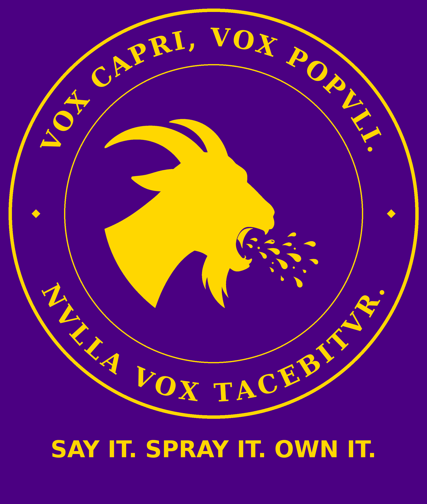

BLEATS
Say It. Spray It. Own It.
VOX CAPRI, VOX POPVLI. NVLLA VOX TACEBITVR
What is being built
A social platform and root-access enclave service that protects user rights instead of trampling them — a Facebook + MySpace hybrid with an honest spine. Described ≠ delivered: this page is a draft struck in the lab, served on a Tor hidden service, while the public domains are still being secured.
The offering: a sovereign enclave of your own, reached by a shell account, with root inside your walls. Your machine, your keys, your rules — we just carry the signal.
The privacy doctrine (as per the TST Constitution)
- No telemetry — unless you specify you wish us to make your data a product, and then you control it.
- We don't keep logs.
- The user is the master. Uterque Servit, Neuter Regnat — each serves, neither rules.
Contact
root@bleats.com — forthcoming:
the bleats.com domain is a parked asset; acquisition requires the
Founder's explicit word and has not happened.
root@axone.me — lab-live,
publicly forthcoming: axone.me registration is pending the
Founder's payment route and registrant details. In the lab, this
mailbox already receives (verified delivery, both directions, in the
build record).
Lab status of this page
Served from the lab host as a Tor hidden service. DNS for
axone.me and axoneme.education is answered
authoritatively by the lab registry; mail for root@ each
domain is delivered by the lab Postfix. Everything here is LAB scope:
nothing on this page claims a public registration, a public mailbox,
or a launched product.
Flagpole of Claim and Coinage: Johnathan 'Qasparr'
Monroe, ARR — All Rights Reserved, Without Prejudice.
93 — Live, Love, and let Love, Live.